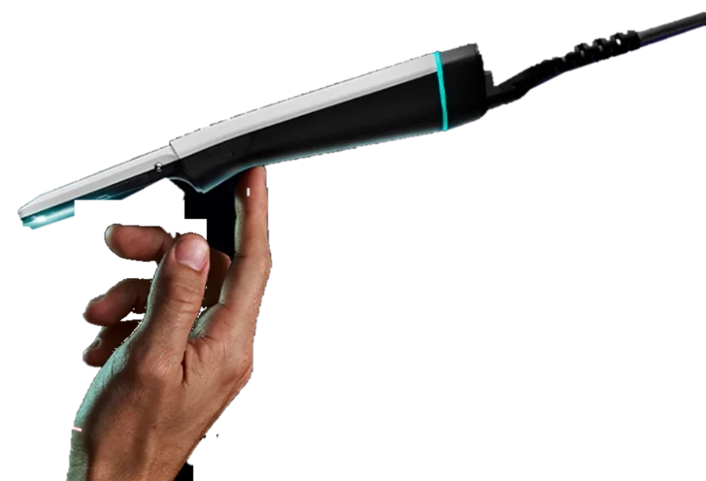
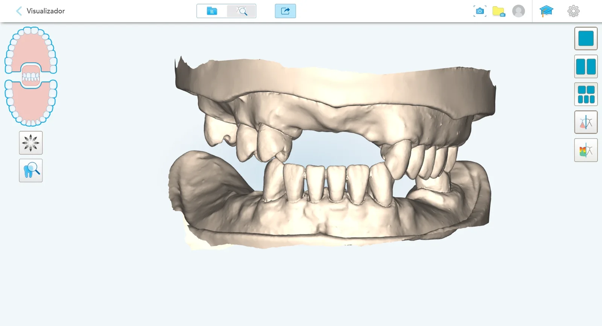

Tecnologia iTero
Scanner de última geração, com captura rápida e alta fidelidade de detalhes.
Escaneamento intraoral de alta precisão, sem investir em um scanner.
A GR Scan leva a tecnologia iTero até o seu consultório: mais conforto para o paciente, mais precisão nos trabalhos e arquivos digitais prontos para o laboratório.
Você agenda o horário, nós levamos o scanner e o operador, e você recebe os arquivos digitais.
Informe o trabalho, o local e o melhor horário pelo formulário desta página. Confirmamos o agendamento com você.
Levamos o scanner iTero e um operador especializado até o seu consultório, no horário agendado.
Fazemos o escaneamento intraoral e revisamos o modelo digital antes do envio.
Enviamos os arquivos STL/PLY por link seguro para você ou diretamente ao laboratório indicado.

Moldagens repetidas, desconforto do paciente e distorções atrasam o tratamento. Com a GR Scan, você oferece escaneamento digital iTero sem comprar equipamento e sem treinar equipe.

Scanner de última geração, com captura rápida e alta fidelidade de detalhes.
Profissional treinado em escaneamento intraoral, focado na qualidade do arquivo.
Modelos digitais entregues com rapidez e segurança ao dentista ou ao laboratório.
A GR Scan substitui a moldagem convencional na maioria dos procedimentos, com arquivos compatíveis com os principais laboratórios e softwares CAD/CAM. Veja onde o escaneamento entra na sua rotina.
Coroas, facetas, onlays e próteses sobre implante com margens nítidas e menos ajustes na entrega.
Documentação, alinhadores e contenções.
Arquivos abertos prontos para desenho e fresagem, sem modelo de gesso.
Escaneamento completo por paciente.
Modelos para guias cirúrgicos e planejamento integrado com a tomografia.
Arquivos enviados no mesmo dia, por link seguro, ao laboratório que você escolher.
Arcada de escaneamento real. Scanner em representação ilustrativa.
Escaneamos com iTero, uma das plataformas de escaneamento intraoral mais usadas na odontologia digital.
Captura em cores, visualização 3D em tempo real para o paciente e exportação em formatos abertos. Mais confiança para o dentista, mais encantamento para o paciente.
Estamos à disposição para tirar dúvidas e montar a melhor rotina de escaneamento para a sua clínica.
Entrar em contatoInforme o trabalho, o local e o melhor horário. Confirmamos o agendamento com você em seguida.
É a moldagem digital feita com um scanner 3D que captura dentes e tecidos em minutos, sem massa e sem moldeira.
Não. Levamos o scanner iTero e o operador até o seu consultório no horário agendado.
Em média de 10 a 20 minutos por paciente, conforme o caso (uma ou duas arcadas, registro de mordida etc.).
Enviamos os arquivos STL/PLY por link seguro para você ou diretamente ao laboratório indicado.
Sim. Os formatos abertos são compatíveis com os principais laboratórios e softwares CAD/CAM.
Próteses, coroas, facetas, implantes, alinhadores, documentação ortodôntica, placas e guias cirúrgicos, entre outros.
Pela agenda online desta página ou pelo WhatsApp. A confirmação chega no seu e-mail.